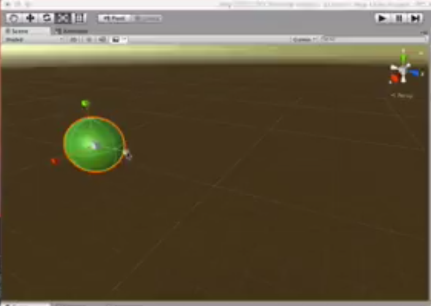

3D Videos
This site is for project 4. You can look at categories of images, sounds, and videos. You can play the videos and sounds. You can also upload new media.
Unity3D Demos
Author: David Piper
Cubes in Unity3D
This section is a collection of related demos handling Cubes in Unity3D, especially moving and stretching cubes.

 Download This Video
Download This Video
This video shows stretching a green cube in Unity3D.
Spheres in Unity3D
This section is a collection of related demos handling Spheres in Unity3D, especially moving and stretching spheres.

 Download This Video
This video shows stretching a green sphere in Unity3D.
Maya Demos
Author: David Piper
Cubes in Maya
This section is a collection of related demos handling Cubes in Maya, especially moving cubes.

Spheres in Maya
This section is a collection of related demos handling Spheres in Maya, especially stretching spheres.

{kind=link}
Upload section
Choose a file to upload, either via drag-and-drop, or via file selection.
Drag and drop file here.
It will be uploaded when dropped.